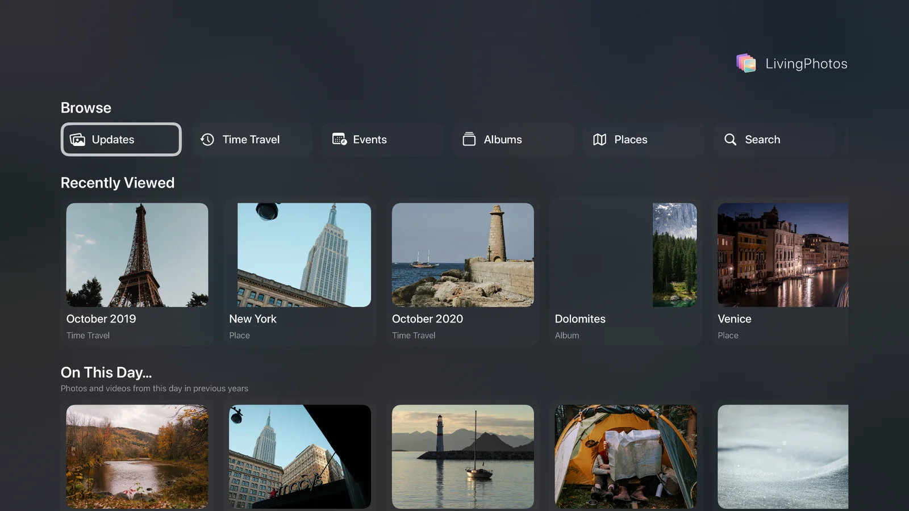
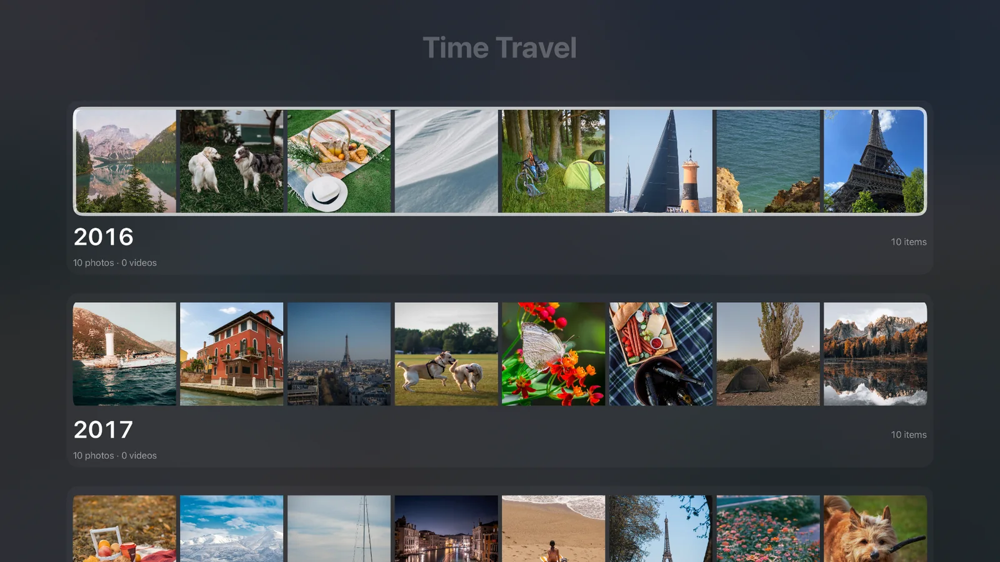
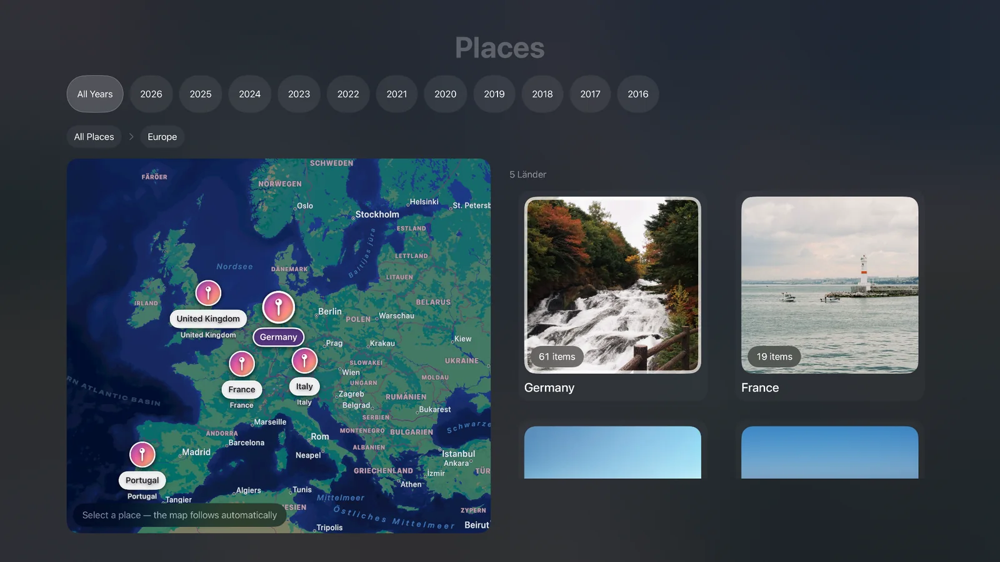
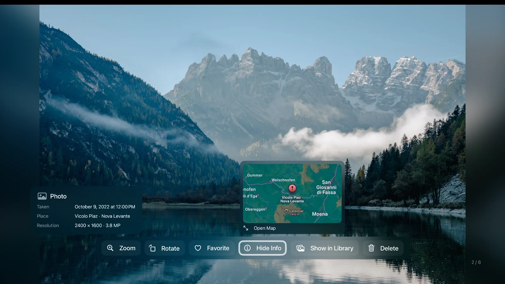

Manage photos on your TV
Rotate photos, add or remove favorites, and delete unwanted pictures from your personal Photos library directly on Apple TV — with confirmation before deletion.
Bring years of memories to the biggest screen in your home. Explore your photo library by time, places and albums — and discover moments worth seeing again.
Explore everything free for 3 daysMore than a slideshow: explore the photos in your iCloud Photos library, enjoy them up close and make everyday changes without leaving your TV.
Rotate photos, add or remove favorites, and delete unwanted pictures from your personal Photos library directly on Apple TV — with confirmation before deletion.
Zoom into a photo on the big screen to take a closer look at the moments that matter.
Browse years and months, from recent adventures to treasured memories.
Travel through your photos by country, region and location.
Explore the collections you already know.
Revisit pictures from years ago and those you have not seen for a while.
Find moments grouped into events.
Explore the personal iCloud Photos library available through your Apple account, not a separate upload or photo service.
Relaxed, remote-friendly browsing designed for the living room.
A look at LivingPhotos on Apple TV.




Full access for 3 days at no cost. After that, the full version is required to continue using LivingPhotos.
One-time purchase · No subscription · No automatic renewal
€12.99 is the planned price in Germany. Prices may vary by country.
For Apple TV · App Store release in preparationFor help with setup, photo access or purchases, contact us.
livingphotos@strouhal-hoferichter.de